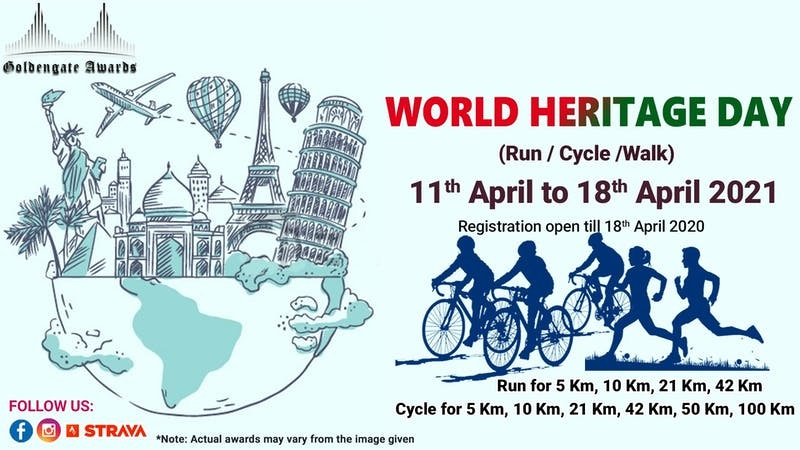

EVENT INFORMATION
World Heritage Day is observed on 18 April to increase awareness on the importance of diversity of cultural heritage and preserving it for the generations ahead. As the virus surge, and lockdowns imposing in various parts of the country, you can run / walk / ride anywhere from your location, following the COVID-19 protocols.
Choose your own Distance, Own Timings and Own Location.
The Participant can run / ride on any one day till 18th April 2021 and can register with us.
This event will be live till 18th April 2021.
Run: Participants can choose the running category for either 5 Kms, 10 Kms, 21 Kms, 42 Kms.
For participants below 12 years of age can run for 2 Kms, 3 Kms, 5 Kms.
Ride: Participants can choose Cycling category for either 5Kms, 10 Kms, 21 Kms, 42 Kms, 50 Kms, 100 Kms.
For participants below 12 years of age can ride for 3 Kms, 5 Kms, 10 Kms.
Terms and Conditions:
1. Run / Ride can be done in any one day, from 18h April 2021. Participants will run / ride on his / her own responsibility and submit their activity screenshot on our
email id: awards.goldengate@gmail.com
2. Participants have to record their activity from mobiles using Strava, Garmin, Nike Run Club, Fit Bit, Endomondo, Runkeeper, Samsung Fit, Addidas, Runtastic.
3. Participants have to qualify atleast the minimum kilometers criteria in Run / Cycle (i.e., 5 kms)
4. Run / Cycle data should be submitted on our Strava Club and on our email id: awards.goldengate@gmail.com.
5. Participants will get finisher e-certificate, Medal, Trophy and Memento (depending upon the category they select).
visit: https://goldengateawards.in/
Join Our Strava Club: https://www.strava.com/clubs/591820